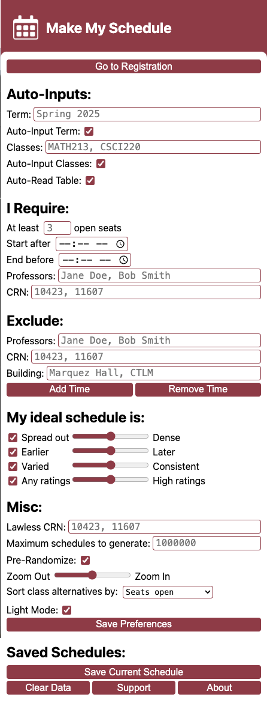

This was made by a student at School of Mines. Make My Schedule is not an official Ellucian nor School of Mines product, nor is it officially endorsed.
What is Schedule Computer?
It's exactly what it sounds like: A Chrome extension that automatically creates your dream schedule!
How do I use it?
Click on the icon in the top right of your browser. You should see a screen like this:

Here, you input all your needs, wants, and preferences.
What does this setting mean?
This button opens a new tab on the "Select a term" page for "Browse Classes". This is where you can start generating schedules.
Format: "(Semester) (Year)"
This is the term you are planning for, such as Spring 2025 or Fall 2024. It will default to Spring 2025 if nothing is provided.
If you have "Auto-Input Term" turned on, this term will be automatically selected on pages for you. Otherwise, this has no effect.
It is not case-sensitive.
Format: On/Off
Suggested: On
When turned on, the "Term" you typed in above will be automatically selected on pages for you. When turned off, you'll have to select a term manually.
Format: "(Subject)(Course Number), (Subject)(Course Number), (Subject)(Course Number), [etc...]"
Here is where you type in the classes that must be in your schedule. Type in the subject and course number (for example, Chemistry 1 is CHGN121). Separate classes by a comma (spaces are ignored).
It is not case-sensitive.
If "Auto-Input Classes" is turned on, these will be automatically inputted into pages for you. If not, this has no effect.
Format: On/Off
Suggested: On
When turned on, the "Classes" you typed in above will be automatically inputted on pages for you. When turned off, you'll have to type in classes manually.
Format: On/Off
Suggested: On
When turned on, the table of class data will automatically be read and processed. If turned off, you must click "Read Table" manually at the top of the page to ingest class information.
Format: Whole number
This is the minimum number of open seats a class can have to be put in your schedule. For example, a value of 5 means all classes must have 5 or more seats available right now. A value of 0 means even full classes should be put into your schedule.
Defaults to 3 if nothing is inputted. Open seats does not count waitlist seats.
Format: Time
This is the earliest time any classes can be. All classes will start at or after this time. For example, "8:30 AM" means no classes will be before 8:30 AM.
Defaults to midndight if nothing is inputted.
Format: Time
This is the latest time any classes can be. All classes will end at or before this time. For example, "6:30 PM" means no classes will be after 6:30 PM.
Defaults to midndight if nothing is inputted.
Format: "(Professor Name), (Professor Name), (Professor Name), [etc...]"
These are the professors you want to be in your schedule. If one of those professors is available for a class, it will require the one they teach. For example, let's say you type in "Bob Dylan", and he teaches Discrete Math. All discrete math classes not taught by him will be filtered out. But, since he doesn't teach Global Studies, it won't filter any of those out.
Separate professor names by a comma. The name must be a substring to count (for example, inputting "Bob" will match "Prof. Bob Dylan Jr." and "Jeffrey Bobbert"). Case sensistive.
Format: "(CRN), (CRN), (CRN), [etc...]"
These are the CRNs of classes you want to be in your schedule. If a schedule doesn't have that specific CRN in it, it will be fitlered out. If two CRNs for the same class are given, then either can be included.
Separate CRNs by a comma.
Format: "(Professor Name), (Professor Name), (Professor Name), [etc...]"
These are the professors you don't want to be in your schedule. Any classes taught by these professors will be filtered out.
Separate professor names by a comma. The name must be a substring to count (for example, inputting "Bob" will match "Prof. Bob Dylan Jr." and "Jeffrey Bobbert"). Case sensistive.
Format: "(CRN), (CRN), (CRN), [etc...]"
These are the CRNs of classes you don't want to be in your schedule. Any classes with these CRNs will be filtered out.
Separate CRNs by a comma.
Format: "(Building name), (Building name), (Building name), [etc...]"
Type in any building names that you don't want in your schedule. Any classes held at these buildings will be filtered out. For example, inputting "CTLM, Marquez Hall" will filter out all classes held in the CTLM and Marquez Hall.
Separate building names by a comma. Case sensitive. Must be the full building name.
Format: Time, Time, Days
From the first time to the last time on the days selected will be blocked out. No classes can take place during these timeslots.
Add a new blocked out timeslot.
Remove the last blocked out timeslot.
Format: On/Off, Slider
Drag the slider left for a more scattered, spread out schedule. Drag the slider right for a densely packed schedule.
This is calculated by, for each day, subtracting the earliest class' starting time by the latest class' ending time, then taking the average.
Uncheck on the left to turn off sorting by density.
Format: On/Off, Slider
Drag the slider left for an earlier schedule. Drag the slider right for a later schedule.
This is calculated by getting the time in the middle of each class and averaging them all.
Uncheck on the left to turn off sorting by lateness.
Format: On/Off, Slider
Drag the slider left for a highly varied schedule day-to-day. Drag the slider right for a very consistent schedule, where each day is similar.
This is calculated by counting how many classes overlap across the week in 10 minute chunks. More overlaps means daily schedules are more consistent.
Uncheck on the left to turn off sorting by consistency.
Format: On/Off, Slider
Drag the slider right to increase how important professor ratings are for sorting. Drag the slider left if professor ratings are not important.
This is calculated by averaging all the professor ratings for a schedule.
Uncheck on the left to turn off reading professor ratings.
Format: "(CRN), (CRN), (CRN), [etc...]"
Classes with these CRNs will ignore all rules and filters set above. For example, if you input "10423", the class with that CRN will be put in schedules even if it's during a blocked time, doesn't have enough seats open, etc.
Separate CRNs by a comma.
Format: Whole number
This is the maximum number of schedules that will be generated before stopping. For example, if you input 100, only 100 schedules will be generated. This can be helpful if you have a slow computer.
Defaults to 1 million.
Format: On/Off
Suggested: On
When turned on, the order of classes will be randomized before generating or sorting schedules. This means that if two schedules are given equal scores when sorting, one will randomly be before the other. Also, if the maximum number of schedules is hit, then which ones are generated and which ones are skipped will be randomly selected.
This helps to ensure that not every student plans on taking the exact same schedule, when there are equally good alternatives. If turned off, their order will be purely deterministic.
Format: Slider
This adjusts how zoomed in/out the schedule viewing is.
Format: Dropdown
Some classes have the exact same timeslot but different professors, seats, or classroom. These are shown as "alternatives" you can select on the top bar. This determines how those alternatives are sorted.
Seats open: Put alternatives with the most seats open first
Professor rating: Put alternatives with the highest professor rating first
Both: Equally weight seats open and professor ratings, then put the best first
Save all the preferences above. If you're viewing a list of schedules, it will re-filter and re-sort schedules based on new preferences.
Save the schedule you're viewing now. You can view, update, remove, and plan these schedules.
Clear all data you saved. This includes saved schedules, classes, filters, and everything else in the extension.